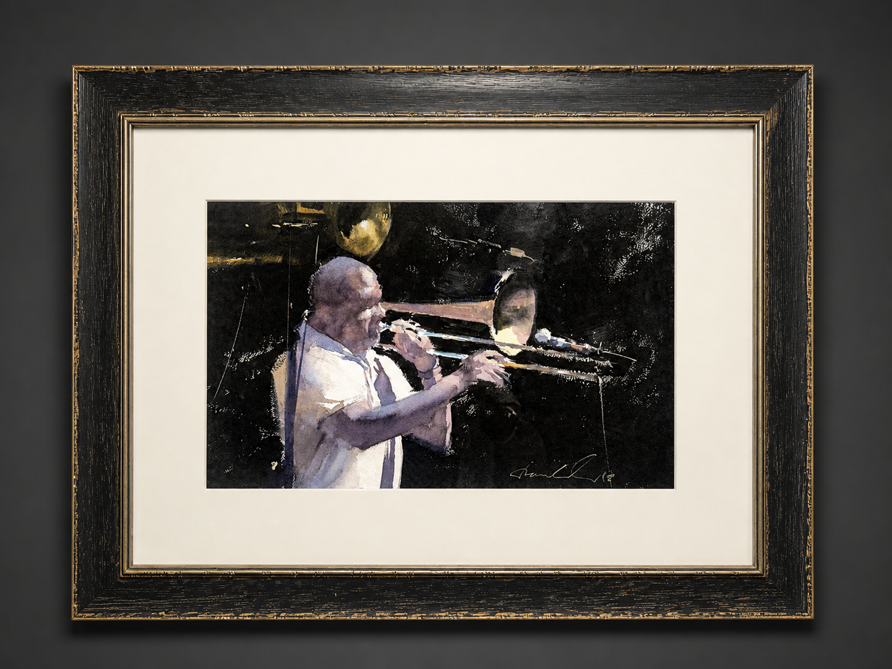

AMBLESIDE ARTIST
Frank Eber
Watercolor · Oil · Plein Air
FEATURED WORK

Passionate
Frank Eber
THE ARTIST
Light,
atmosphere
and feeling.
Frank Eber grew up in Europe and apprenticed with Italian master painter Renato Casaro during the 1990s.
Earlier in his career, Eber worked as a professional illustrator, creating imagery for video cover sleeves throughout the 1980s and 1990s.
His fine-art practice is devoted to creating timeless work in both oil and water media. He works in a direct, loose manner shaped by the traditions of the Old World Masters and the Impressionists.
Eber lived for three years in the south of France and has painted on location in many countries around the world, allowing travel, atmosphere and direct observation to remain central to his work.
He is a Signature Member of the American Impressionist Society and the American Watercolor Society and a juried Artist Member of the California Art Club.
ARTIST'S VISION
“In essence I am trying to paint what cannot be painted.”
— Frank Eber
THE WORK
Beyond
literal
representation.
For Eber, painting should reach beyond the simple act of copying nature.
He approaches a scene as a personal and emotional response, searching for the character beneath what is immediately visible rather than reproducing appearances alone.
Atmosphere and light are only the beginning. As shapes dissolve into patterns of value, color and illumination, the work moves away from literal description and toward something more poetic.
The aim is not simply to record a place, but to discover what gives it life — the underlying energy that cannot be easily named or represented.
SELECTED WORKS
The Collection
Breakfast of Kings
Cascade
PHILOSOPHY
Painting as Meditation
INTERPRETATION
Eber believes painting should be a personal interpretation of nature, rather than a literal copy of what stands before the artist.
ATMOSPHERE
Light and atmosphere serve as entry points into a deeper exploration of mood, value and emotional response.
POETRY
As visual forms dissolve into patterns of light and value, the painting becomes less descriptive and more poetic.
MEDITATION
Eber describes painting as a refuge and a meditative state — a timeless space in which the ego recedes and experience becomes whole.
TRAINING & AFFILIATIONS
Tradition & Practice
APPRENTICESHIP
Apprenticed with Italian master painter Renato Casaro during the 1990s.
AIS
Signature Member, American Impressionist Society.
AWS
Signature Member, American Watercolor Society.
CAC
Juried Artist Member, California Art Club.
TEACHING
Conducts workshops and classes at local, national and international levels.
ON LOCATION
The world
as studio.
Eber's years in the south of France and his experience painting in countries around the world have kept direct observation at the center of his practice.
Working on location allows him to respond to changes in light, weather and atmosphere as they occur, while his loose approach prevents the work from becoming overly literal.
The scene becomes a starting point rather than an endpoint — something to be interpreted through memory, feeling and the physical act of painting.
COLLECT